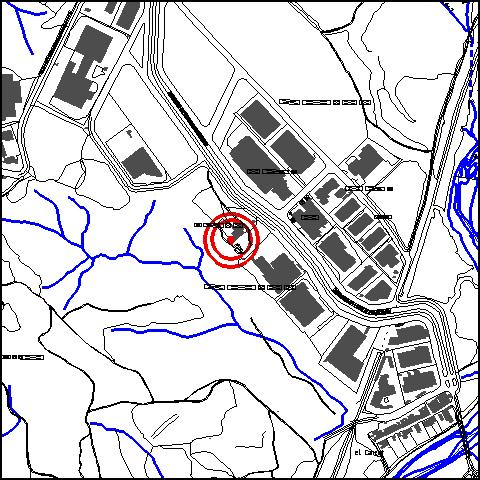

|
|
 |
Nom de l’element: Ermita de Santa Rita
Clau d’identificació: A.19
Nucli o indret: A Can Pedrerol de Dalt, P.I. Santa Rita,
UTM: X= 415.964, Y= 4.590.335
Règim del sòl: sòl urbà.
1.1. Època de construcció i tipologia:
Ermita situada a la casa de Can Pedrerol de Dalt, amb una entrada principal amb portaló de fusta.
1.2. Estat de conservació:
Bo.
1.3. Ús actual:
Serveis i accessibilitat de la finca:
1.4. Accés:
Accés fàcil des del c/ Electricitat del P.I. Santa Rita.
És una de les quatre ermites existents del terme municipal, d’important valor històric relacionat amb la casa pairal de Can Pedrerol de Dalt.
3.1. Usos admesos:
Uacute;s religiós, recreatiu cultural i social.
3.2. Condicions d’ordenació:
Segons Pla Especial a redactar.
3.2. Condicions d’ordenació:
Accés des del c/ Electricitat del P.I. Santa Rita.
BPU (Bé Protegit Urbanísticament)